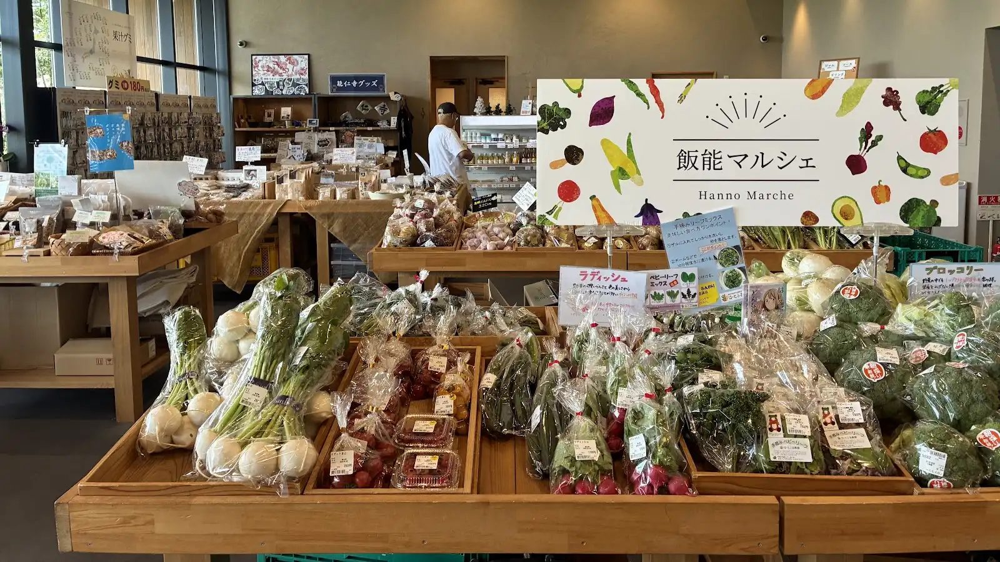

One Hour from Shinjuku, Zero Tourists: Inside Japan's Fermentation Theme Park
Most first-time visitors to Tokyo never leave the Yamanote loop. Fair enough — there's a lifetime of things to do inside it. But an hour west of Shinjuku, past where the train lines thin out and the mountains start, there's a town called Hanno that quietly has three things you won't find bundled together anywhere else in Japan: a 500-year-old Zen temple, one of the country's strangest theme parks, and a mountain-spring sake brewery you can actually walk into.
This is not Asakusa. There's no souvenir street, no queue, no English signage. It's the kind of day trip Tokyo locals keep to themselves — which is exactly why I built a tour around it.

What the day actually looks like
You start at Noinji Temple, a working Zen temple with a garden that's been quietly doing its thing for five centuries — no tour groups, no ticket booth rush, just gravel paths and the sound of your own footsteps. From there it's a short walk to something you genuinely cannot predict from photos: OH!!! Fermentation Theme Park, a real theme park built entirely around miso, soy sauce, sake and pickles. It sounds like a joke. It is not — it's one of the more unexpectedly fun places I take guests, and almost no foreign visitor has ever heard of it.
After lunch, we head to Igarashi Brewery, a working sake maker that brews with spring water straight off the mountain. Their retail shop and tasting counter are open without a reservation, and on the days a brewery walkthrough is available, guests get a private look at the kura itself — a small bonus I only promise when I know it'll happen. If there's daylight left, we finish with an optional short hike up Mt. Tenranzan for a view that stretches to Mt. Fuji and the Tokyo Skytree on a clear day.
Why nobody's heard of it
Hanno isn't hiding — it's just never been packaged for tourists. There's no English pamphlet explaining what OH!!! actually is, no sign pointing casual visitors toward Igarashi's tasting counter, and no obvious reason for a first-time visitor to get off the train here instead of at Kawagoe or Nikko. That's the gap this tour fills: I know which sake to ask for, which parts of the theme park are worth the time, and when the brewery tour is actually running.
Walk it with a local
Hanno Forest, Fermentation Park & Sake Tasting — 5 hours, max 6 guests, ★5.0 on GetYourGuide. Launch pricing is on while the tour is new.
Check dates & book →Planning more of west Tokyo?
If temples and forest trails are your thing, guests often pair this with the Totoro-Inspired Forest & Lake Sayama walk, or browse other things to do near Hanno.
Some links on this page are affiliate links — booking through them supports this site at no extra cost to you.